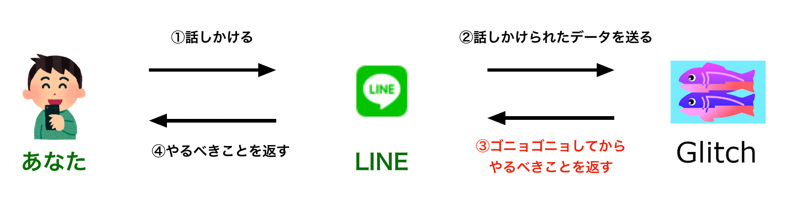

<!DOCTYPE html>
<html lang="en">
  <head>
    <meta charset="utf-8" />
    <meta name="viewport" content="width=device-width, initial-scale=1.0, maximum-scale=1.0, user-scalable=no" />

    <title>LINE Botをつくろう!</title>
    <link rel="shortcut icon" href="./favicon.ico" />
    <link rel="stylesheet" href="./dist/reset.css" />
    <link rel="stylesheet" href="./dist/reveal.css" />
    <link rel="stylesheet" href="./dist/theme/black.css" id="theme" />
    <link rel="stylesheet" href="./css/highlight/base16/zenburn.css" />


  </head>
  <body>
    <div class="reveal">
      <div class="slides"><section  data-markdown><script type="text/template">


# JCSインターン研修
## 2023年
</script></section><section  data-markdown><script type="text/template">
### 今日やること😇

- LINE Botを使ってチャットボットをつくろう💪
</script></section><section ><section data-markdown><script type="text/template">
### チャットボットって何🤔？

- なんか送ったらなんか返してくれるやつ
</script></section><section data-markdown><script type="text/template">
### 例えば

- [LINEで使えるチャットボット15選。トーク画面でピザ注文や再配達依頼ができる！](https://mag.app-liv.jp/archive/64844)
</script></section></section><section  data-markdown><script type="text/template">
### そんな簡単に作れるの🥺？

- つくれます😇
</script></section><section  data-markdown><script type="text/template">
### どんなものを作るの😣？

- あなたのやることを教えてくれるチャットボット🤗
</script></section><section  data-markdown><script type="text/template">
### どんなものを作るの😣？

- ① やりたいことをあらかじめいくつか入力しておく

- ② チャットボットに「今日何すればいい？」と質問する

- ③ ①で書いたやりたいことのいずれかをBotが返してくれる
</script></section><section  data-markdown><script type="text/template">
### 全体のイメージ


</script></section><section  data-markdown><script type="text/template">
### Glitchってなに？


- ブラウザで簡単にWebアプリを作れるサービス
- 面倒な環境構築が不要
- 今日はGlitch上でプログラミングします！！
</script></section><section ><section data-markdown><script type="text/template">
## やってみよう！
</script></section><section data-markdown><script type="text/template">
まずは開発環境を準備します
</script></section><section data-markdown><script type="text/template">
### 開発環境の準備
1. LINE Botとともだちになる
2. Glitchの開発環境を用意する
</script></section></section><section ><section data-markdown><script type="text/template">
### 1. LINE Botとともだちになる
</script></section><section data-markdown><script type="text/template">
#### 手順
1. 別途配布する資料からQRコードを読み込んで友だち追加する
2. 適当にメッセージを送信して応答があるか確認する
</script></section></section><section ><section data-markdown><script type="text/template">
### 2. Glitchの開発環境を用意する
</script></section><section data-markdown><script type="text/template">
#### 手順

1. 別途配布する資料からGlitchのPJにアクセスする(アカウントがあればログイン頂いても構いません)
2. Request to Join のボタンを押してPJへの参加を要求する


3. 承認後、画面が切り替わらない場合はリロードする
</script></section></section><section  data-markdown><script type="text/template">
これで準備完了！
</script></section><section  data-markdown><script type="text/template">
### Let's プログラミング！

練習問題に取り組んでみよう💪

<small>※ブレイクアウトルームへ移動します</small></script></section></div>
    </div>

    <script src="./dist/reveal.js"></script>

    <script src="./plugin/markdown/markdown.js"></script>
    <script src="./plugin/highlight/highlight.js"></script>
    <script src="./plugin/zoom/zoom.js"></script>
    <script src="./plugin/notes/notes.js"></script>
    <script src="./plugin/math/math.js"></script>
    <script>
      function extend() {
        var target = {};
        for (var i = 0; i < arguments.length; i++) {
          var source = arguments[i];
          for (var key in source) {
            if (source.hasOwnProperty(key)) {
              target[key] = source[key];
            }
          }
        }
        return target;
      }

      // default options to init reveal.js
      var defaultOptions = {
        controls: true,
        progress: true,
        history: true,
        center: true,
        transition: 'default', // none/fade/slide/convex/concave/zoom
        plugins: [
          RevealMarkdown,
          RevealHighlight,
          RevealZoom,
          RevealNotes,
          RevealMath
        ]
      };

      // options from URL query string
      var queryOptions = Reveal().getQueryHash() || {};

      var options = extend(defaultOptions, {}, queryOptions);
    </script>


    <script>
      Reveal.initialize(options);
    </script>
  </body>
</html>
